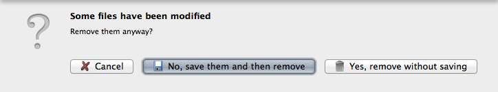

Add and Remove Files
Add
You can add a folder with all its subfolders and musical files using the button or shortcut ⌘O.
To add some files use the button or shortcut ⇧⌘O.
You can also drag&drop any folders and any files into the Qoobar window; or use command line like this:
qoobar "/home/I/music/first dir" /home/I/music/just_file.mp3
The Folder Tree allows you to easily browse your music library. The folder you click will be placed into the Files Table. All files currently present in the tab will be removed. To add a folder with all its subfolders and musical files right-click on this folder and choose "List this folder with all subfolders"
Files are always appended to the end of the current tab.
If the number of added files is less than 100, they will be automatically selected.
If some files you are adding are read-only, a warning message will appear, and these files will be grayed-out in the Files table.
Remove
To remove all files in the current tab click .
Or click anywhere in the Files Table, press ⌘A, then ⌦.
Or just press ⌘⌦.
To remove some of the added files select them and press ⌦.
When you are removing some not saved files, a simple dialog appears where you can choose whether to save changes or discard them:
.
Note: Files removing clears the undo stack.
© 2009-2016 Alex Novichkov